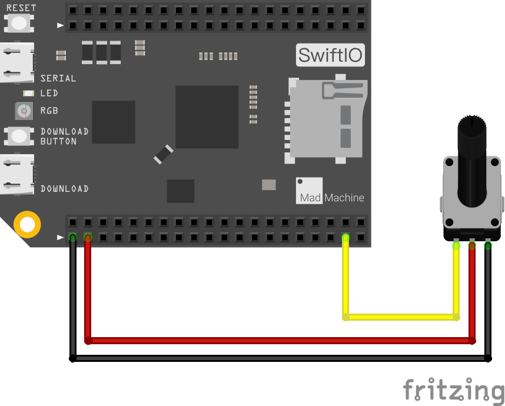

ReadAnalogInput
In this new example, you are going to read analog input. We'll use a potentiometer.
The potentiometer can provide a certain range of resistance. When you twist the knob, the resistance will change, thus the input voltage will change with it.
When SwiftIO board reads from the pin, it will get a number between 0 and 4095. And then change it into a digital number between 0 and 3.3V.
What you need
- SwiftIO board
- potentiometer
- wires
Circuit

Let's build the circuit now.
The potentiometer has three legs:
- the first leg on the left goes to analog pin A0
- the second leg goes to power
- the third leg goes to ground
Different potentiometer may vary, so please refer to its manual before building the circuit.
Code
For the code, we will use the AnalogIn class.
// Read the input voltage on a specified analog pin.
// The value you get will be a float number between 0.0 and 3.3.
// Import the library to enable everything in it, like relevant classes and methods.
// This is first step for your coding process.
import SwiftIO
// Initialize the pin A0 as a analog input.
let pin = AnalogIn(Id.A0)
// Read the input voltage every second.
while true {
// Declare a constant to store the value.
// Read the voltage value from the analog pin.
let value = pin.readVoltage()
// Print the value and you can see it in the serial monitor.
print(value)
// Wait a second to slow the reading frequency.
sleep(ms: 1000)
}
You can find the example code at the bottom left corner of IDE:  > GettingStarted > ReadAnalogInput.
> GettingStarted > ReadAnalogInput.
Well, you may try to read from to other modules, like sensors. It's quite interesting.